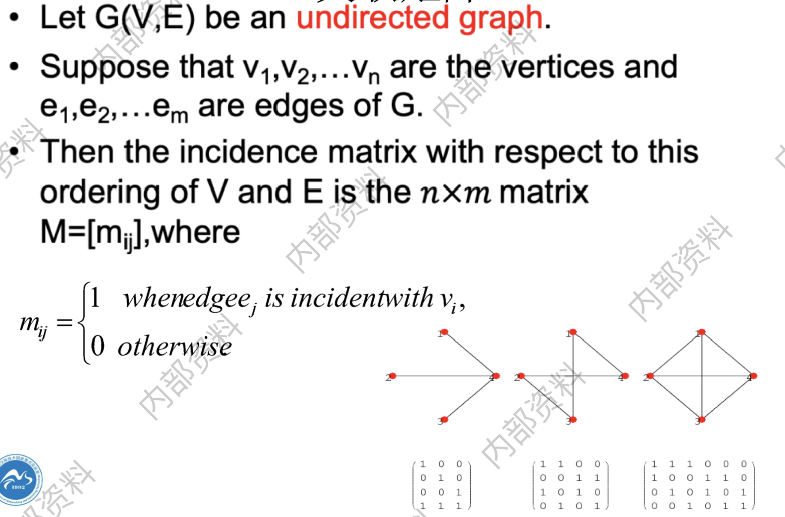

图论中的基本概念
图的基本概念
- 图：具有顶点集$V$的图亦称为$V$上的图(a graph on V)，图$G$的顶点集记为$V(G)$, 边集记为$E(G)$；
- 邻接Adjacency：如果${x,y}$是$G$的一条边，则称两个顶点$x$和$y$是相邻的(adjacent)或邻点 (neighbour)，$x,y$称为边的endpoint；如果两条边$e \ne f$有一个公共端点，则称$e$和$f$是相邻的；
- 领域、邻点集Neiborhood：The set of all neighbors of a vertex $v$ of $G = (V,E)$, denoted by $N(v)$, is called the neighborhood of $v$. 即顶点$v$的所有邻点构成的集合。If $A$ is a subset of $V$ , we denote by $N(A)$ the set of all vertices in G that are adjacent to at least one vertex in $A$. So,$N(A)=\bigcup_{\nu\in A}N(\nu)$.
- 度：A vertex with degree $0$ is called isolated.(孤立点); A vertex of degree $1$ is called pendant.(悬挂点);
- 生成子图Spanning subgraph：删边不删点；
- 导出子图Induced subgraph：若$G’ \subset G$且$G’$包含了$E$中所有满足$x,y \in E$的边$xy$,则称$Q$是$G$的导出子图(induced subgraph)；（人话，删点不删边）；
- 图的收缩The contraction of G：

- 补图Graph complement：相对于完全图的补

- 关联矩阵Incidence matrices：即第$i$行表示第$i$个顶点与哪些边连接，第$j$列表示第$j$条边连接哪些顶点。
握手定理Handshaking Theorem：
无向图中，如果有度为奇数的点，那么这些点的个数必为偶数个。
- 有向图的度：The in-degree of $v$, $deg^- (v)$, is the number of edges going to $v$(入度); The out-degree of $v$, $deg^+ (v)$, is the number of edges coming from $v$(出度); The degree of $v$, $deg(v):deg^-(v)+deg^+ (v)$, is the sum of v’s in-degree and out-degree.
有向图握手定理：

- 阶：一个图的顶点个数称为它的阶(order),记为$\left | G \right |$，它的边数记为$\Vert G \Vert$；
- 平凡图：阶为0或1的图称为平凡的 (trivial)；
- 独立：互不相邻的顶点/边称独立顶点/独立边(independent vertex/edge)。若一个顶点集或边集中没有两个元素是相邻的，则该集合称为独立集(independent set)；独立的顶点集也称作稳定集(stable set)；
一些特殊的图结构Special Graph Structures
- 完全图$K^n$：若$G$的所有顶点都是两两相邻的，则称$G$是完全的(complete)，n个顶点的完全图记为$K^n$；
- 环图$C^n$：

- 轮图$W^n$：
 $W^n$有$n+1$个顶点，中心点度为$n-1$，边上$n$个点度为$3$。
$W^n$有$n+1$个顶点，中心点度为$n-1$，边上$n$个点度为$3$。 - n维体图 n-Cubes/hypercubes$Q^n$：
- Plato graphs（柏拉图图）：

- 彼德森图（Petersen）：

- Bipartite Graphs二分图：
 判断方法：1. 可以用两种颜色染色； 2. 图中不存在长度为奇数的回路；
判断方法：1. 可以用两种颜色染色； 2. 图中不存在长度为奇数的回路； - Complete Bipartite Graphs 完全二分图：
图的同构Graph Isomorphism
- 图的同构：

- 图不变量graph invariants：对于图上的一个映射，如果对每个同构图它均取相同的值，则这样的映射称为一个图不变量(graph invariant)。一个图的顶点数和边数就是两个简单的图不变量；图中两两相邻的最大顶点数也是图不变量。
图的连通性Connectivity
- 路：这里所有的$x_i$均互不相同，顶点$x_0和$$x_n$由路$P$连接(link)，并称它们为路的端点(endvertex)或顶端(end)；而$x_1,x_2,\dots,x_{n-1}$称为$P$的内部(inner)顶点。一条路上的边数称为路的长度(length)，长度为k的路记为$P^k$；
- 简单路：A path is simple if it contains no edge more than once.
- 独立路：如果其中任意一条路不包含另一条路的内部顶点, 则称它们是独立路(independent path)；
- 连通图：如果非空图$G$中的任意两个顶点之间均有一条路相连，我们称$G$是连通的(connected)；
- 连通分支/独立子图Connected component：设$G = (V,E)$是一个图，则它的极大连通子图称为分支(component)；
- 割点cut vertex：the removal from a graph of a vertex and all incident edges produces a subgraph with more connected components.
- 割边cut edge：an edge whose removal produces a graph with more connected components；
- 点连通度：使得G是k-连通的最大整数k称为G的连通度(connectivity)，并记为$\kappa (G)$；
- 边连通度：记为$\lambda(G)$；
- 有向图中的强连通、弱连通：强连通要求A directed graph is strongly connected if there is a path from a to b and from b to a whenever a and b are vertices in the graph. 弱连通与无向图类似；
- 圈：$x_0x_1\dots x_{k-1}x_0$；
- 围长和圈长：图$G$中最短圈的长度叫做围长(girth),记为$g(G)$,而$G$中最长圈的长度称为周长(circumference)；
- 弦：图中不在圈上但连接圈中两个顶点的边称为这个圈的弦(chord)；
- 导出圈：$G$的导出圈(induced cycle)是不含弦的圈，即$G$的导出子图是个圈；
- 距离、直径、中心点、半径：暂略；
- 树、森林：暂略；